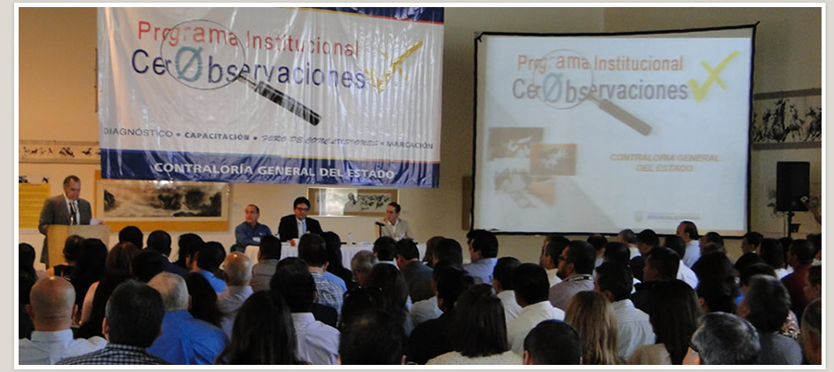

PROGRAMA INSTITUCIONAL "CERO OBSERVACIONES"
A continuación se pone a su disposición la información expuesta en cada uno de los cursos presenciales del Programa Institucional Cero Observaciones.
Para acceder a la información elija la opción que le corresponda: